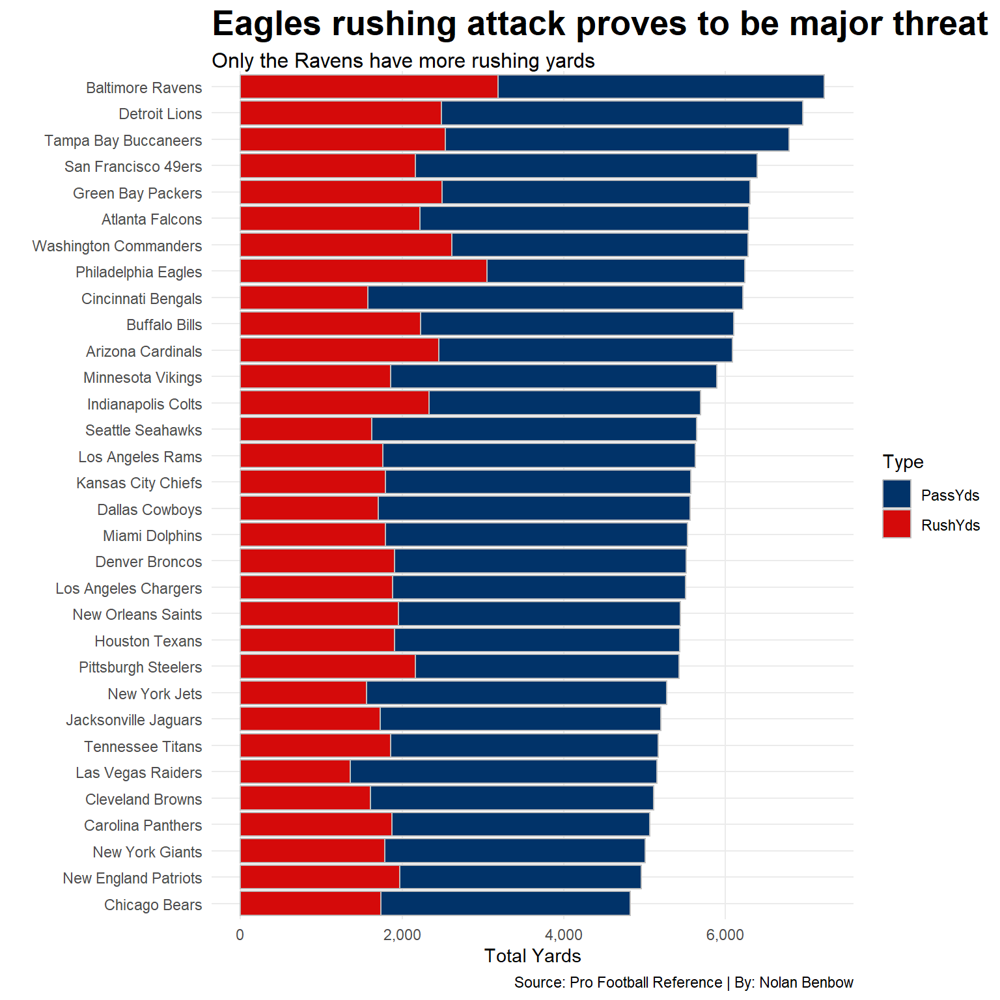

Code
library(tidyverse)
library(ggbump)
library(ggalt)
library(ggtext)
TeamOffense <- read_csv("nfl_team_offense_2020_2024.csv")Since 2019, The Kansas City Chiefs have dominated the NFL. In that time, Mahomes and the Chiefs have been to every AFC Championship game and have been in 5 of 6 Super Bowls. Out of all the teams that the Chiefs have played in the Super Bowl, only two have managed to beat them.
At this time, the only starting quarterback to beat Kansas City in the Super Bowl has been Jalen Hurts. The Eagles have made the Super Bowl twice since 2019 and have faced the Chiefs both times. The Eagles Just barely lost to the Chiefs in Super Bowl LVII on what was a controversial holding call. However this past season in Super Bowl LIX, Philadelphia blew the doors off of Kansas City winning 40-22.
This poses the question, are the Eagles the most likely to take over the Chiefs dynasty?
First, let’s take a glance at their stats since Jalen Hurts became the starting quarterback in 2020 and compare them to Kansas City.
The first question is how has each team’s offense ranked over the last five seasons?
library(tidyverse)
library(ggbump)
library(ggalt)
library(ggtext)
TeamOffense <- read_csv("nfl_team_offense_2020_2024.csv")ggplot() +
geom_bump(data=TeamOffense, aes(x=Season, y=Rk, color=Tm)) +
geom_point(data=TeamOffense, aes(x=Season, y=Rk, color=Tm), size = 5) +
geom_text(data = TeamOffense |> filter(Season == min(Season)), aes(x = Season - .2, y=Rk, label = Tm), size = 3.5, hjust = 1) +
geom_text(data = TeamOffense |> filter(Season == max(Season)), aes(x = Season + .2, y=Rk, label = Tm), size = 3.5, hjust = 0) +
scale_x_continuous(breaks=c(2020, 2021, 2022, 2023, 2024), limits = c(2018, 2026)) +
scale_y_reverse(breaks=c(1,2,3,4,5,6,7,8,9,10,11,12,13,14,15,16,17,18,19,20,21,22,23,24,25,26,27,28,29,30,31,32,33)) +
scale_color_manual(values = c(
"Kansas City Chiefs" = "#E31837",
"Philadelphia Eagles" = "#4CBB17",
"other" = "grey")) +
scale_y_reverse() +
labs(
title="Eagles offense remains one of the NFL's best",
subtitle="Since Super Bowl LVII, <span style = 'color:#4CBB17;'>Philadelphia's'</span> offense still remains potent, meanwhile <span style = 'color:#E31837;'>Kansas City's'</span> has taken a huge dive",
y= "",
x = "",
caption = "Source: Pro Football Reference | By: Nolan Benbow") +
theme_minimal() +
theme(
legend.position = "none",
plot.title = element_text(size = 20, face = "bold"),
axis.title = element_text(size = 8),
plot.subtitle = element_text(size=13),
panel.grid.minor = element_blank()
) +
theme(
plot.subtitle = element_textbox_simple())In Hurt’s first two years as an NFL starting QB, The Eagles struggled on offense where Kansas City dominated. But notice the turn around in 2022. That was the year they lost Super Bowl LVII. Both Kansas City and Philadelphia ranked in the top two in the league. What is interesting to note is that both teams lost their offensive coordinators that year. In the two years since Super Bowl LVII, The Eagles have remained the seventh best offense in the league where Kansas City has dropped all the way down to 15th.
Next, Let’s look at Jalen Hurts and his touchdown to interception ratio since he was named the Eagles week one starting Quarterback in 2021.
library(tidyverse)
library(ggalt)
library(ggtext)
QBs <- read_csv("qbs19752024.csv")TopRatios <- QBs |>
filter(Season >= 2021) |>
group_by(Player) |>
summarize(
TDs = sum(TD),
INTs = sum(Int)) |>
arrange(desc(TDs)) |>
head(20)
ggplot() +
geom_dumbbell(
data=TopRatios,
aes(y=reorder(Player, TDs), x=TDs, xend=INTs),
colour = "darkgrey",
colour_x = "green",
colour_xend = "red",
size = 2.5) +
labs(
x="",
y="",
title="Hurts' TD/INT isn't even top 10",
subtitle = "When comparing <span style = 'color:green;'>TDs</span> to <span style = 'color:red;'>INTs</span>, the Eagles QB trails in comparison to the NFL's elite",
caption = "Source: Pro Football Reference | By: Nolan Benbow" ) +
theme_minimal() +
theme(,
plot.title = element_text(size = 20, face = "bold"),
axis.title = element_text(size = 8),
plot.subtitle = element_text(size=11)
) +
theme(
plot.subtitle = element_textbox_simple())
Interestingly enough, Jalen Hurts doesn’t even crack the top ten of quarterbacks. While Hurts still has a positive TD/INT ratio, he lacks behind many of the NFL’s top quarterbacks and even some who haven’t had sustained succuess since before Hurts was drafted.
This makes one question, Just how were the Eagles able to stay dominant on offense?
Let’s Look at their offensive yardage distribution from this last year and see take a look at how they dominated through out the season.
library(tidyverse)
library(ggalt)
library(ggtext)
topoffenses <- read_csv("nfl_team_offense_2020_2024.csv")
TopOffenses24 <- topoffenses |>
group_by(Tm, Season) |>
summarise(
RushYds = mean(RushingYds),
PassYds = mean(PassingYds),
TotalYds = RushYds + PassYds,
) |>
filter(Season == "2024")
TopOffenses24Long <- TopOffenses24|>
select(-TotalYds) |>
pivot_longer(
cols = ends_with("Yds"),
names_to = "Type")ggplot() +
geom_bar(data=TopOffenses24Long, aes(x=reorder(Tm, value), weight = value, fill=Type), color="grey") +
scale_fill_manual(values = c("#013369","#D50A0A")) +
coord_flip() +
labs(
title="Eagles rushing attack proves to be major threat",
subtitle="Only the Ravens have more rushing yards",
x= "",
y = "Total Yards",
caption = "Source: Pro Football Reference | By: Nolan Benbow") +
scale_y_continuous(labels = scales::comma) +
theme_minimal() +
theme(
plot.title = element_text(size = 20, face = "bold"),
plot.subtitle = element_text(size=12),
panel.grid.minor = element_blank()
) +
theme(
plot.subtitle = element_textbox_simple())What is interesting is that, unlike most teams in the NFL, the Eagles dominated in the run game this past year. The only team that out rushed Philadelphia was Baltimore, however the ravens also threw for significantly more yards.
The one constant throughout the Chiefs dynasty has been to keep the ball out of Mahomes hands. The best way to do that is to rush for first downs.
Let’s take a look at how Philadelphia stacked up to the rest of the league with their rushes for first downs and rushing touchdowns scored.
library(tidyverse)
library(ggrepel)
TotalOffense <- read_csv("nfl_team_offense_2020_2024.csv")
TotalOffense24 <- TotalOffense |>
filter(Season == "2024")
Eagles24 <- TotalOffense24 |>
filter(Season == "2024", Tm == "Philadelphia Eagles")ggplot() +
geom_point(
data = TotalOffense24,
aes(x=RushingFirstDowns, y=RushingYds, size=RushingTD), alpha =0.3) +
scale_size(range=c(3,8), name = "Rushing TDs"
) +
geom_point(
data=Eagles24,
aes(x=RushingFirstDowns, y=RushingYds, size=RushingTD),
color = "#4CBB17") +
geom_text_repel(
data = Eagles24,
aes(x=RushingFirstDowns, y=RushingYds, label = Tm))+
geom_vline(xintercept = 115.0625) +
geom_hline(yintercept = 2036.688) +
theme_minimal() +
labs(
x = "Rushing First Downs", y = "Total Rushing Yards",
title = "The Eagles rushing attack is a game changer",
subtitle = "Opposing teams can't get them off the field",
caption = "Source: Pro Football Reference | By: Nolan Benbow"
) +
geom_text(
aes(x = 115.0625, y = 3200),
label = "A Team's Rushing Total",
size = 3,
color = "#d50a0a") +
geom_text(
aes(x = 150, y = 2100),
label = "Teams First Downs from Rush ",
size = 3,
color = "#d50a0a") +
geom_text(
aes(x = 130, y = 2800),
label = "More yards, more first downs",
size = 3,
color = "#013369") +
geom_text(
aes(x = 100, y = 1400),
label = "Less yards, less first downs",
size = 3,
color = "#013369") +
scale_x_continuous(labels = scales::comma) +
scale_y_continuous(labels = scales::comma) +
theme_minimal() +
theme(
plot.title = element_text(size = 20, face = "bold"),
plot.subtitle = element_text(size = 12),
axis.title = element_text(size = 12),
panel.grid.minor = element_blank()
)In a surprise to no-one, the Eagles dominated in the run game. A lot of it can be attributed to two key factors this past season. The addition of Saquon Barkley to the Eagles running back room and they’re secret weapon, the tush push.
What does this mean? It means that the Eagles are able to stay on the field longer and drain more clock, Not giving Mahomes or the Chiefs offense an opportunity to see the ball.
One may look at this and see that the Eagles may seem unstoppable, with a deadly running attack and above average quarterback play, there should be no way that the Eagles don’t over take Kansas City as a dynasty.
However historically, there has been an achilles heel when it comes to the Eagles year to year.
library(tidyverse)
library(ggbump)
library(ggtext)
library(ggalt)
TeamDefense <- read_csv("nfl_team_defense_2020_2024.csv")ggplot() +
geom_bump(data=TeamDefense, aes(x=Season, y=Rk, color=Tm)) +
geom_point(data=TeamDefense, aes(x=Season, y=Rk, color=Tm), size = 5) +
geom_text(data = TeamDefense |> filter(Season == min(Season)), aes(x = Season - .2, y=Rk, label = Tm), size = 3.5, hjust = 1) +
geom_text(data = TeamDefense |> filter(Season == max(Season)), aes(x = Season + .2, y=Rk, label = Tm), size = 3.5, hjust = 0) +
scale_x_continuous(breaks=c(2020, 2021, 2022, 2023, 2024), limits = c(2018, 2026)) +
scale_y_reverse(breaks=c(1,2,3,4,5,6,7,8,9,10,11,12,13,14,15,16,17,18,19,20,21,22,23,24,25,26,27,28,29,30,31,32,33)) +
scale_color_manual(values = c(
"Kansas City Chiefs" = "#E31837",
"Philadelphia Eagles" = "#4CBB17",
"other" = "grey")) +
scale_y_reverse() +
labs(title="Philly's defense remains one of the most inconsistent in the NFL",
subtitle="Compared to the <span style = 'color:#E31837;'>Chiefs'</span>, The <span style = 'color:#4CBB17;'>Eagles'</span> stuggle to stay among the leagues best Defenses",
y= "",
x = "Season",
caption = "Source: Pro Football Reference | By: Nolan Benbow") +
theme_minimal() +
theme(
legend.position = "none",
plot.title = element_text(size = 20, face = "bold"),
axis.title = element_text(size = 8),
plot.subtitle = element_text(size=13),
panel.grid.minor = element_blank()
) +
theme(
plot.subtitle = element_textbox_simple())
The Eagles have not been able to field a consistent defense from year to year. When looking back since the 2020 season, Philadelphia’s defense has been one of the most inconsistent in the league. While part of it could be due to a change in coordinator in 2023, the fall from the defense in 2023 is even worse than that of the Kansas City Chiefs offense that same season.
However, If the Eagles defense can find consistency, and assuming the team stays healthy, The Eagles have a real great shot at dethroning the Mahomes and Chiefs dynasty.